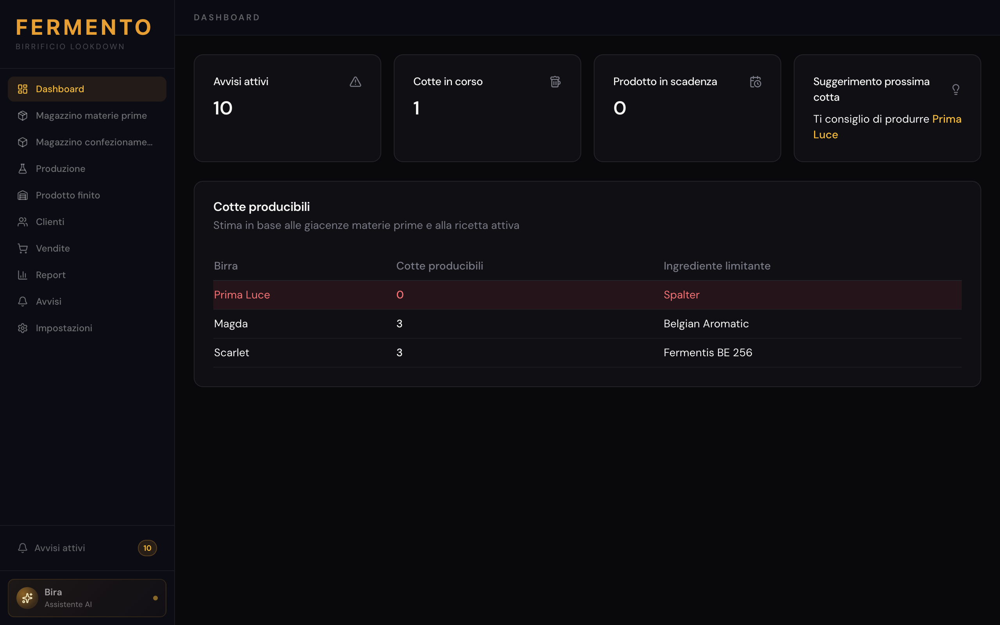
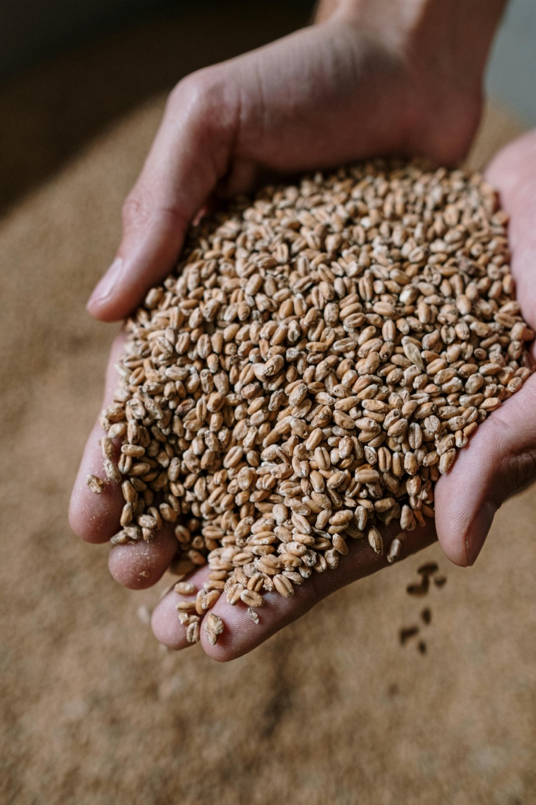
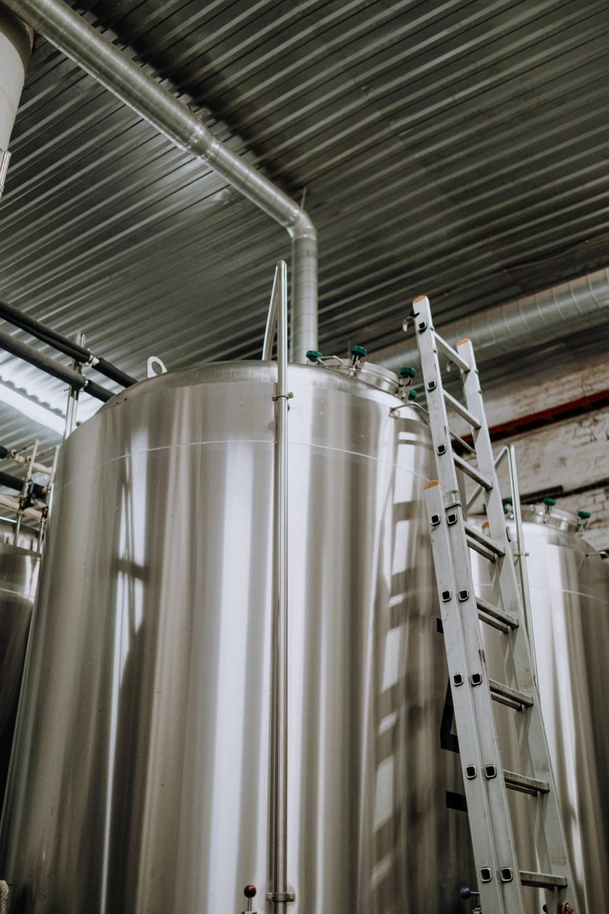
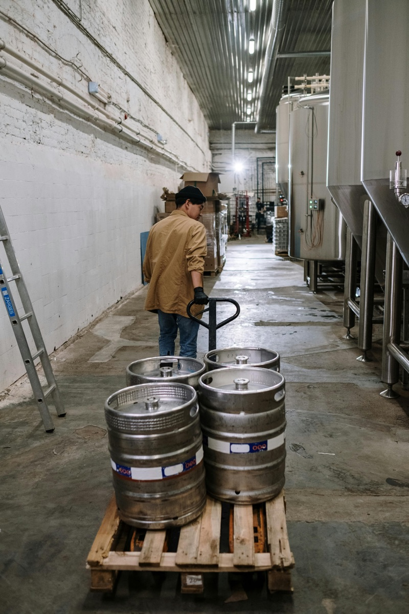

Magazzino sotto controllo
Materie prime e materiali di confezionamento per lotto, con scadenze e giacenze sempre aggiornate. Soglie di riordino automatiche: sai prima tu del fornitore quando stai per finire un malto.
Magazzino, produzione e vendite. Tutto sul tuo computer, senza canoni mensili.

Dalla ricezione delle materie prime alla vendita dell'ultima bottiglia. Un unico software, sul tuo computer, senza abbonamenti.
Materie prime e materiali di confezionamento per lotto, con scadenze e giacenze sempre aggiornate. Soglie di riordino automatiche: sai prima tu del fornitore quando stai per finire un malto.
Ogni cotta scarica le materie prime in automatico dai lotti più vecchi. Ricette con storico completo: modifichi oggi, le cotte passate restano com'erano. Vedi in tempo reale quante cotte puoi avviare.
Anagrafica clienti con storico acquisti, giacenze del prodotto finito per lotto e formato. Bottiglie, fusti, omaggi: ogni uscita tracciata e collegata alla cotta di origine.
Bira è l'assistente AI integrato in Fermento. Falle una domanda in italiano e risponde leggendo i tuoi dati in tempo reale — giacenze, cotte, clienti, scadenze, vendite.
Bira gira sul tuo PC con Ollama. Nessun dato esce dal birrificio. Niente cloud, niente connessione obbligatoria.
Connessione a Groq per risposte più veloci e ragionamenti più complessi. I dati sensibili — clienti e ricette — non vengono mai inviati.
Bira non aspetta che tu faccia una domanda. Ogni volta che apri Fermento analizza magazzino, scadenze e clienti e ti presenta le raccomandazioni più urgenti, ordinate per priorità.
// Bira può solo leggere: non modifica nulla senza il tuo consenso.
Se gestisci il tuo birrificio tra Excel, quaderni e WhatsApp — e l'idea di un gestionale da migliaia di euro l'anno ti sembra fuori scala — Fermento è pensato per te.
Come funziona Fermento dall'interno: ogni step del processo e tracciato e collegato al precedente.

Ogni carico diventa un lotto: malto, luppolo, lievito, materiali di confezionamento. Registri quantita, fornitore, numero lotto e data di scadenza. Fermento calcola le soglie di riordino in automatico in base al consumo delle cotte precedenti.
Prima di avviare una cotta, Fermento ti mostra quante ne puoi produrre con le giacenze attuali e quale ingrediente è il collo di bottiglia. Scegli la ricetta, confermi: le materie prime vengono scaricate in automatico partendo dal lotto piu vecchio.
A fine cotta registri litri prodotti, scarti e confezionamento. Fermento crea il lotto di prodotto finito con la sua data di scadenza. Le giacenze di bottiglie e fusti si aggiornano in tempo reale per ogni formato.
Collega la vendita al cliente e seleziona i prodotti. Fermento propone i lotti con scadenza piu vicina, scala le giacenze e aggiorna lo storico cliente. Supporta bottiglie, fusti, altri prodotti e omaggi.
La dashboard mostra ogni mattina lo stato del birrificio: avvisi attivi, cotte in corso, lotti in scadenza. I report coprono produzione, vendite per cliente, trend mensili e omaggi, filtrabili per qualsiasi intervallo di date.
Database SQLite sul tuo PC. Niente cloud forzato, niente lock-in, niente abbonamento a un servizio che potrebbe sparire.
Una licenza, una volta. Gli aggiornamenti sono inclusi nel primo anno. Il costo del software non scala con il tuo volume.
Ogni funzione nasce da un problema reale segnalato da chi usa il software ogni giorno. Non da product manager lontani dal birrificio.
Aggiungi birre, ricette, formati, clienti senza limiti. Soglie, scadenze e configurazioni si cambiano da interfaccia, senza assistenza tecnica.


Ci sentiamo su WhatsApp, fissiamo una call di 30 minuti. Vedi Fermento dal vivo sul tuo computer e capisci se fa al caso tuo.
Installiamo Fermento, attiviamo la tua licenza, inseriamo le prime birre e ricette. Configuriamo il backup automatico. Una mezz'ora insieme e sei operativo.
Aggiornamenti automatici, nessun intervento tecnico richiesto. Se hai un dubbio scrivi su WhatsApp — rispondo io.